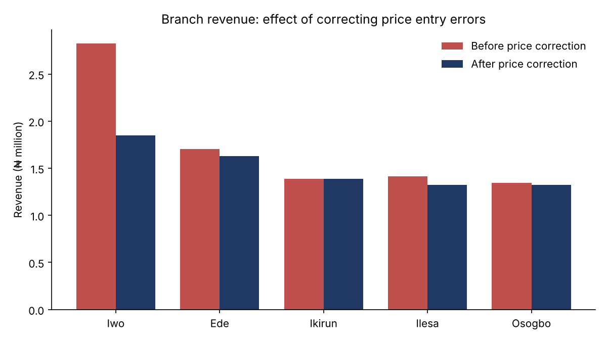
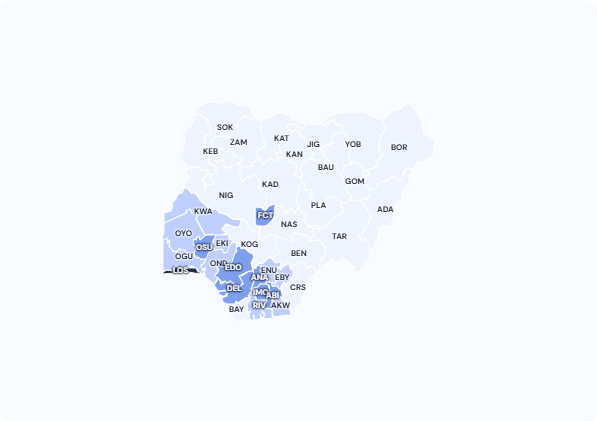

Curious by nature
I start with the right questions and keep the business context in view.
Data Analyst & Insight Strategist
I’m Elijah, a data analyst helping organizations uncover patterns, measure what matters, and build a more confident data-driven future.
About me
I’m Elijah Ojo, a Data Analyst and Insight Strategist focused on transforming complex datasets into clear findings and evidence-based decisions. My work spans business performance, research, and operational improvement.
I start with the right questions and keep the business context in view.
I validate data, refine assumptions, and build reliable analytical outputs.
I turn technical findings into visual stories that teams can act on.
What I do
From raw datasets to executive-ready stories, I connect technical analysis with the business questions that matter most.
Explore, clean, and model data to reveal meaningful patterns and answer key business questions.
Build reliable queries and structured datasets that make reporting faster and more consistent.
Translate analysis into focused dashboards and presentations stakeholders can act on quickly.
Services
Practical analytics support for organizations that need clearer reports, stronger decisions, and measurable research outcomes.
Data cleaning, exploratory analysis, trend detection, and actionable recommendations.
Interactive, executive-ready dashboards in Excel, Power BI, or Tableau.
Survey analysis, statistical reporting, and evidence-based findings for research projects.
Clear, presentation-ready charts that communicate the insight behind the numbers.
Selected work

Audited 1,525 synthetic pharmacy transactions with MySQL, correcting data quality issues and checking drug sales for age plausibility.

Interactive analysis of 36 states and the FCT across poverty, health, water, energy, education, and financial inclusion.
Open dashboard ↗How I work
Clarify the goal, audience, and the decisions the analysis needs to support.
Clean and explore the data, test assumptions, and uncover reliable patterns.
Shape findings into clear dashboards and narratives built for the right audience.
Provide practical recommendations and an outcome that teams can use immediately.
Start a conversation
I’m available for analytics projects, dashboard work, and data consulting opportunities.
elijah.ojo@example.com ↗